更新日 : 2024/05/04
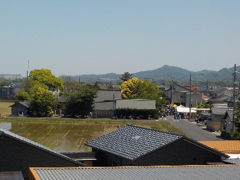
ゴールデンウィークは大なほらひです。
出店が沢山あり賑わっていました。
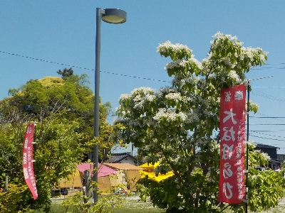
なんじゃもんじゃの花が咲いてました。木がまだ小さいですね。
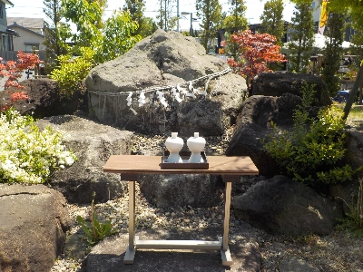
伊勢の神宮遥拝所がありました。ここから参拝できるんですね。
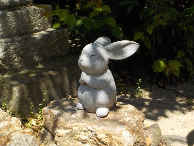
出雲大社の遥拝所もあり、ウサギがいました。
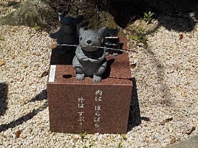
万九千神社はネズミのオブジェがあります。
「内はほらほら 外はすぶすぶ」とかいてあるネズミがたぶんメインですね。
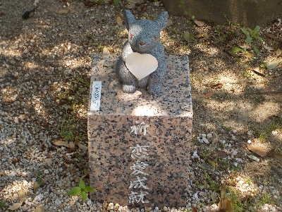
最近の神社の定番的な恋愛成就ものもありました。
ネズミは寄贈できるみたいですが、私が寄贈するとしたら何て書いたものを寄贈するかな？鳥居を寄贈するよりこっちのほうが楽しそうです。
更新日 : 2017/05/06
出雲市では有名な神社ですが、初めて行きました。
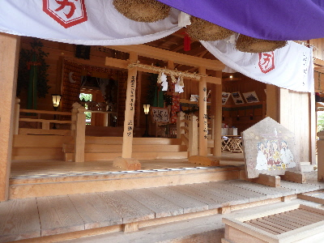
遷宮されたので、まだ柱が新しいです。
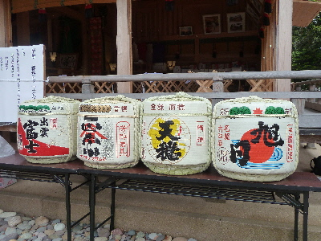
チラシによると、出雲大社に集まった八百万の神様がこの万九千神社で宴会をして帰るそうです。
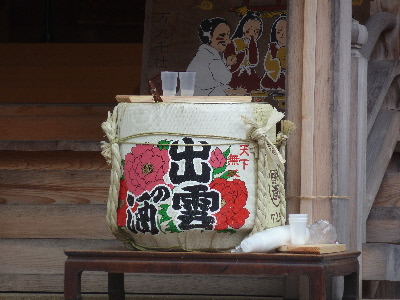
お酒の振る舞いで飲み放題です。
私は車の運転があるので飲まなかったですけど。お祭りの司会の方が、何杯でもどうぞって言ってたので遠慮なく飲めそうでした。
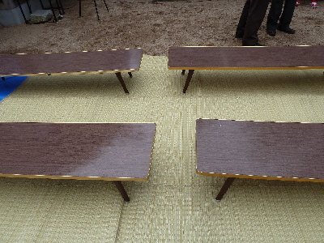
境内にござとテーブルが設置してあるので、ゆっくり飲んだり食べたり出来るようになっていました。
屋台で食べ物を買って、のんびり神楽を観ました。
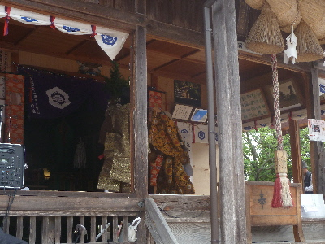
宴会とか食事しながら神楽観れるっていいですね。ゴールデンウィークのレジャーに丁度良かったです。
【おいしいものを食べよう。】【たくさん寝よう。】
【ソロ活をしよう!】【季節感のあることをしよう。】【動画視聴はほどほどに。】【当サイトの全てのコンテンツは無断転載禁止です。】